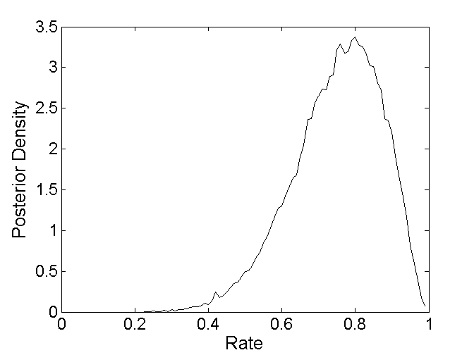

Example script: running MCMC chains in parallel
This example illustrates how to call JAGS and run a number of MCMC chains in parallel. It requires that you have the Matlab Parallel Computing Toolbox installed http://www.mathworks.com/products/parallel-computing
Contents
Model definition
The BUGS example was taken from the WinBUGS course developed by Michael Lee and Eric-Jan Wagenmakers at http://www.ejwagenmakers.com/BayesCourse/BayesBook.html
In this example, the goal is to infer a rate with the following model:
|
model { # Prior on Rate theta ~ dbeta(1,1) # Observed Counts k ~ dbin(theta,n) } |
This script is stored in the text file "Rate_1.txt" The data is initialized in Matlab with variables k (number of successes) and n (total number of observations). In the rate problem, the goal is to get samples of theta, the rate of Beta prior for the binomial distribution.
clear; clc
Defining some MCMC parameters for JAGS
nchains = 7; % How Many Chains? nburnin = 1000; % How Many Burn-in Samples? nsamples = 5000; % How Many Recorded Samples?
Defining observed data
k=8; % number of observed successes n=10; % number of observations total % Create a single structure that has the data for all observed JAGS nodes datastruct = struct('k',k,'n',n);
Set initial values for latent variable in each chain
for i=1:nchains S.theta = 0.5; % An Initial Value for the Success Rate init0(i) = S; % init0 is a structure array that has the initial values for all latent variables for each chain end
Calling JAGS to sample using parallelization
Note that execution times do not reflect linear speedfactor factors when execution times are short. In this case, the overhead produced by the file reading and writing (a serial process) will dominate performance.
if matlabpool('size') == 0 matlabpool open 7; % initialize 7 local workers end doparallel = 1; % use parallelization fprintf( 'Running JAGS...\n' ); tic [samples, stats, structArray] = matjags( ... datastruct, ... % Observed data fullfile(pwd, 'Rate_1.txt'), ... % File that contains model definition init0, ... % Initial values for latent variables 'doparallel' , doparallel, ... % Parallelization flag 'nchains', nchains,... % Number of MCMC chains 'nburnin', nburnin,... % Number of burnin steps 'nsamples', nsamples, ... % Number of samples to extract 'thin', 1, ... % Thinning parameter 'monitorparams', {'theta'}, ... % List of latent variables to monitor 'savejagsoutput' , 1 , ... % Save command line output produced by JAGS? 'verbosity' , 1 , ... % 0=do not produce any output; 1=minimal text output; 2=maximum text output 'cleanup' , 0 ); % clean up of temporary files? toc
Running JAGS... Running chain 1 (parallel execution) Running chain 2 (parallel execution) Running chain 3 (parallel execution) Running chain 4 (parallel execution) Running chain 5 (parallel execution) Running chain 6 (parallel execution) Running chain 7 (parallel execution) Elapsed time is 0.586403 seconds.
Analyze samples produced by JAGS
samples.theta contains a matrix of samples where each row corresponds to the samples from a single MCMC chain
figure(1);clf;hold on; eps=.01;bins=[eps:eps:1-eps]; count=hist(samples.theta,bins); count=count/sum(count)/eps; ph=plot(bins,count,'k-'); set(gca,'box','on','fontsize',14); xlabel('Rate','fontsize',16); ylabel('Posterior Density','fontsize',16);
Analyze summary statistics
stats.mean and stats.std contain the mean and standard deviation of the posterior distribution for each latent variable that was monitored. For example, we can read out the mean and std of theta:
stats.mean.theta stats.std.theta
ans =
0.7496
ans =
0.1207
Analyze the Rhat value
stats.Rhat.theta
ans =
1.0000